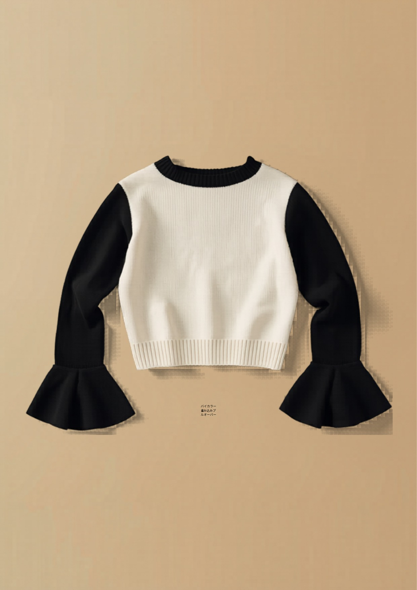

和
KNIT EXHIBITION ・ 2026–2027
ニット 展示会
サンプル企画書
ターゲット：30代から／レディース
テーマ：30代に刺さる“独自サンプル” ＋ 他社に難しい技術
価格：上代 〜5,000円（この技術を、この価格で）
東和盛泰株式会社 TOUWASEITAI CO., LTD. ニット衣料 OEM・ODM
TEL 084-999-2390 ／ info@touwaseitai.com
東和盛泰株式会社TOUWASEITAI CO., LTD.
CONCEPT & LINEUP
本企画は、30代からの女性に実際に刺さり、かつ展示会でアパレルバイヤーに技術力が伝わるニットサンプルです。SNS・国内市場のリサーチに基づき、「定番もできる。その上で、他社が難しい編地もできる」という御社の強みを軸に構成しています。
POSITIONINGこの技術を、この価格で。
― 高度な編地を、上代〜5,000円で実現できることが最大の差別化。
| No. | アイテム | 技術フック（他社に難しい点） | 30代に刺さる理由 | 上代 |
|---|
| 定番 | 洗えるリブポロ
定番できますアピール | 抗ピリング・きれいめ実用の量産品質 | 衿で顔まわりきれい・オフ〜休日兼用・洗える | ¥2,990 |
| A | 透かしシアーカーディガン | 全面の透かし編み（ポワント／移し目）の安定生産 | さりげない肌見せ・羽織りで通年・SNS映え | ¥3,900〜4,900 |
| B | 立体編地切替ニットベスト | ケーブル×リブ×メッシュの編地切替・立体成型 | お腹/二の腕カバー・ジレ通勤・着回し | ¥3,500〜4,500 |
| C | バイカラー編み込みプルオーバー | インターシャ（はめ込み配色）＋フレア袖振り出し | バイカラーで華奢見え・フレア袖で二の腕細見え | ¥3,900〜4,900 |
| D | パフ袖ニットアンサンブル | 共地2点の統一・パフ袖の増目成型 | きちんと見え即完成・セットでも単品でも | ¥4,500〜4,900 |
※ 上代は想定。寸法・原価・度目は参考値であり、確定はカウンターサンプル承認後とします。各型の詳細寸法（POM）・縫製仕様は別添の工業仕様図に記載。
東和盛泰株式会社TOUWASEITAI CO., LTD.
STANDARD ITEM
00
洗えるリブポロセーター
RIB POLO

- 素材
- アクリル60/ナイロン30/毛8/PU2（抗ピリング）
- 編み
- 2×2リブ／7GG
- 衿/袖
- リブ衿・2釦プラケット／長袖リブ口
- カラー
- 全5色
位置づけ：「定番もきちんと作れます」の証明枠。洗える・毛玉になりにくい実用品質で、まず取引の入口を作る。
- 30代に刺さる：衿で顔まわりがきれい・オフィス〜休日兼用・家庭洗濯機で洗える
- 実勢：同型2,990円が高レビュー多数の鉄板ゾーン
¥2,990 上代／想定製造コスト ¥900〜1,300
東和盛泰株式会社TOUWASEITAI CO., LTD.
SAMPLE A
A
透かし編みシアーカーディガン
SHEER CARDIGAN

- 素材
- アクリル・ナイロン混（シアー感＋抗ピリング）
- 編み
- 透かし編み（ポワント／移し目）全面／14〜16GG
- 衿/前立
- Vネック・前立て1×1リブ・6釦
- カラー
- ｲﾉｾﾝﾄﾎﾜｲﾄ/ﾐﾝﾄ/ｸﾞﾚｰｼﾞｭ
◎技術フック：全面の透かし編みは、抜き目が崩れず端が安定するために編成プログラム精度と糸選定が要る。安価な工場ほど目飛び・歪みが出る。「この繊細な透かし編みを、この価格で」。
- 30代に刺さる：さりげない肌見せで女らしさ・羽織りで通年・SNSの「シアーニット」直撃
¥3,900〜4,900 上代
東和盛泰株式会社TOUWASEITAI CO., LTD.
SAMPLE B
B
立体編地切替ニットベスト
TEXTURED VEST

- 素材
- アクリル・ウール混（立体感・抗ピリング）
- 編み
- 中央ケーブル／脇リブ／肩ヨークメッシュ／7GG
- 衿
- Vネック・アームホール/裾＝リブ
- カラー
- ｻﾝﾄﾞﾍﾞｰｼﾞｭ/ｸﾞﾚｰｼﾞｭ/ﾌﾞﾗｳﾝ
◎技術フック：1枚の中でケーブル／リブ／メッシュの3編地を切替、立体的に編む工程は編成プログラムと度目調整が複雑で、量産で破綻させない工場が限られる。技術力が一目で伝わる。
- 30代に刺さる：お腹・二の腕カバー・ジレ感覚で通勤・着回し力
¥3,500〜4,500 上代
東和盛泰株式会社TOUWASEITAI CO., LTD.
SAMPLE C
C
バイカラー編み込みプルオーバー
BICOLOR PULLOVER

- 素材
- アクリル混（抗ピリング）・2色使い
- 編み
- 天竺＋インターシャ（はめ込み配色）／フレア袖／12GG
- 衿
- ボートネック（デコルテ見せ）・クロップド丈
- カラー
- × ／ ×
◎技術フック：色切替をプリントでなくインターシャ（はめ込み配色）で。糸をからげ裏に渡り糸を出さず編むため境界のループ精度が要る。さらにフレア袖の振り出し成型を併用。
- 30代に刺さる：バイカラー＝華奢見え・フレア袖＝二の腕細見え・1枚で様になる
¥3,900〜4,900 上代
東和盛泰株式会社TOUWASEITAI CO., LTD.
SAMPLE D
D
パフスリーブ ニットアンサンブル
PUFF-SLEEVE SET
- 素材
- アクリル・綿混（綿＝肌触り／アクリル＝抗ピリング）・2点共地
- 編み
- 天竺／カーデ袖＝パフ（袖山の増目成型）／12GG
- 構成
- ①パフ袖カーディガン＋②ノースリーブインナー（共地2点）
- カラー
- ﾊﾞﾀｰ/ﾊﾞﾚｴﾋﾟﾝｸ/ｵﾌﾎﾜｲﾄ
◎技術フック：カーデとインナーを共地・統一デザインの2点で仕上げ、パフ袖（袖山の増目成型）を量産で安定させる。型紙・度目・ボリュームを2点で揃える整合が要る。
- 30代に刺さる：「きちんと見え」が即完成・セットでも単品でも着られる
¥4,500〜4,900 上代（2点）